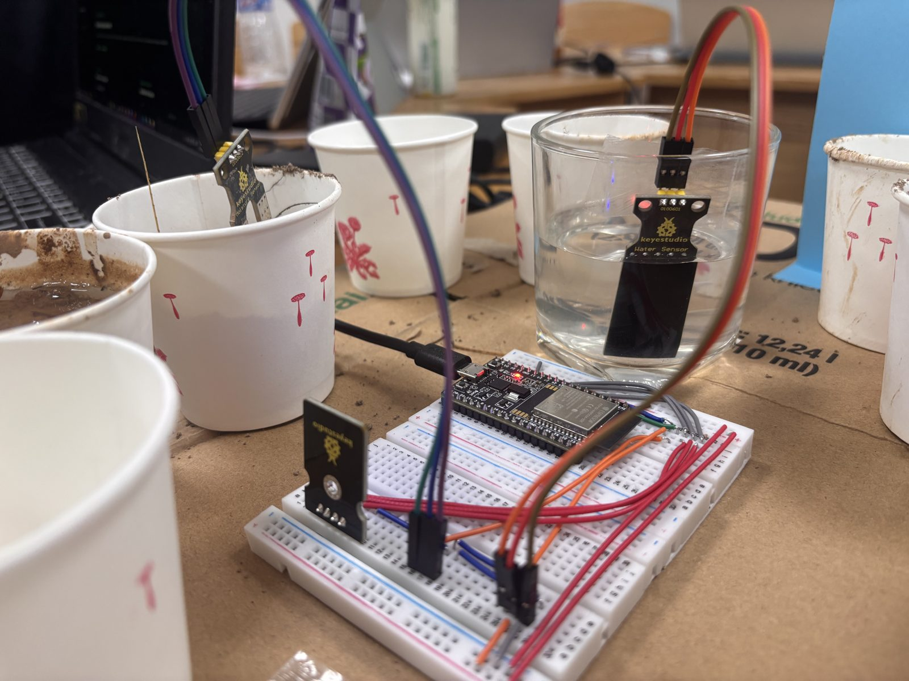
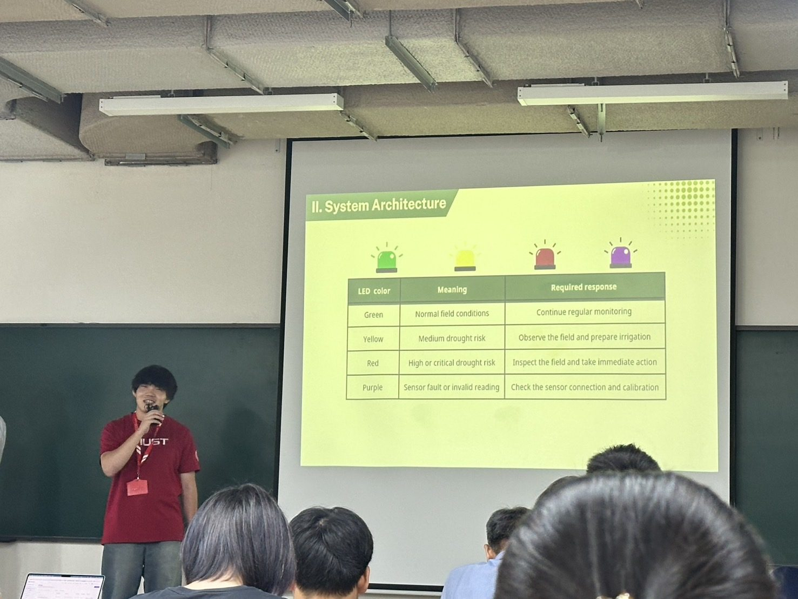
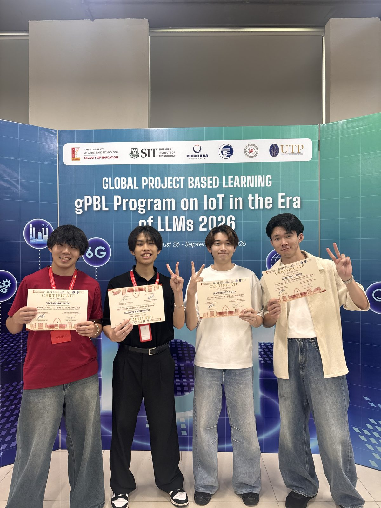

最優秀賞
干ばつモニタリングシステム
畑の土の水分をセンサーで測り、干ばつのリスクを4色のLEDとダッシュボードで知らせる IoT システムです。 緑は通常、黄は中程度のリスク、赤は高いリスク、紫はセンサーの異常を表します。
前回の gPBL でハードウェアと IoT システムの設計を担当した経験をもとに、今回はチームのリーダーを務めました。 役割分担と進行を担い、成果を英語でまとめて発表し、最優秀賞を受賞しました。
- 役割
- リーダー（進行・英語での取りまとめと発表）
- チーム
- 日本・インド・ベトナム・マレーシアの学生による混成チーム
- コード
- pbl2026-summer ／ pbl-Hanoi2026


